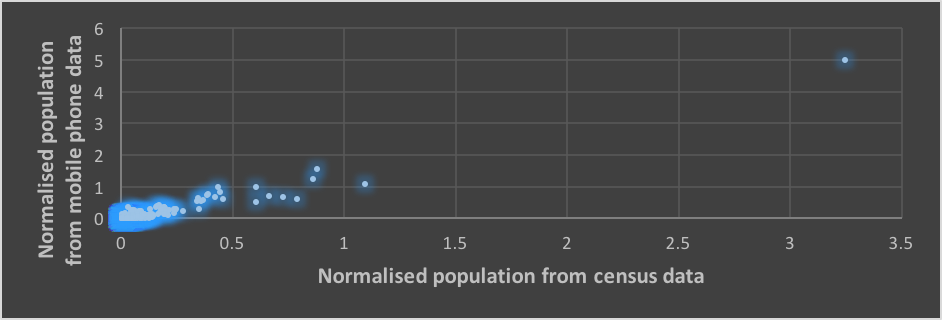

Civil 361: Traffic Engineering 2
Chapter 1: TRAFFIC STUDIES AND DATA
Dr Minh Kieu
Lecturer
Department of Civil and Environment Engineering, University of Auckland
These slides:
http://bit.ly/2020-civil361-C2
Auckland is transforming rapidly
Auckland’s city centre is going through a period of rapid transformational change, with substantial investment committed to the area by both the public sector and private developers.
America’s Cup and APEC take place here in 2021
City Rail Link starts operating in 2024: 54,000 peak-time passengers each hour
“By 2032 Auckland's city centre will be highly regarded internationally as a centre for business and learning, innovation, entertainment, culture and urban living - all with a distinctly 'Auckland' flavour.” - Auckland City Centre Masterplan
Transport is vital for economic development and personal welfare, but…
1. Difficult to meet growing demand
2. Growing energy consumption and other resources
3. Air pollution, emission of GHGs: growing faster than GDP, plus adverse health and social impacts
4. Road Safety
5. Non‐inclusive development: not all are benefiting

Learning outcomes:
1. Understanding the fundamental data in traffic studies
2. How to collect those data
3. Traditional vs Big Data
4. How to deal with Big Data
Agenda
1. What are traffic studies
2. Fundamental varibles in traffic studies
3. Measurements from different view points
4. Common variables of traffic studies
5. Examples and problems
6. Recap
What is 'traffic studies'?
A traffic study is the collection and analysis of measurable factual data relating to traffic and its characteristics.
Why do we need to collect data?
Managing the physical systems (e.g. maintain, repair, operate)
Investigating trends over time (e.g. forecast future mobility needs)
Understanding the needs and choice of the public & industry
Calibrating basic relationships of paramters of transport models
Accessing potential impacts (Before & After studies)
Common variables of traffic studies
Traffic flow/volume
Time/Space headway
Time/Space Occupancy
Time/Space Mean speed
Density
Measurements from multiple viewpoints
At a point
Over a short section: smaller than 100m
Over a long section: 100 - 1000m
Area-based measurements
Moving observer
Measurements at a point
Traffic Flow
Time Headway (or just headway)
Time occupancy
What is 'traffic flow'?
The total number of vehicles passing a given point in a given time. Traffic flow is expressed as vehicles per hour (veh/hr)
\[\begin{aligned} Flow(q) \quad q = \frac{N}{T} \ (veh/hr) \\ \end{aligned} \]Traffic flow data can be collected by:
manual counting with human surveyors
road tubes
loop detectors
big data e.g. mobile phone data, etc
How to measure traffic flows
With human surveyors

Manual counting is usually more expensive per unit time but is used where automatic machine counting is not capable of recording the data in the form required.
How to measure traffic flows
With road tubes
How to measure traffic flows
With loop detectors (and how they contribute to traffic signals!)
Traffic survey using video processing

What is 'time headway'
Time between two vehicles passing the same point
Low headway means congestion, more popular for public transport
What is 'occupancy'
- The proportion of time that a detector is “occupied” or covered, by a vehicle in a defined time period.
\[\begin{aligned} O_t = \frac{\sum_{i}^N{\delta t_i}}{T}\\ \end{aligned} \]Measurements over a short distance (less than 10 m)
For instance: using two loop detectors or a human observer to measure speed
What is 'speed': Speed is a vehicle's rate of motion
There are two ways to measure speed:
Time-mean-speed is calculated from the individual speed recorded for vehicles passing a point over a selected time period
\[\begin{aligned} v_t = \frac{\sum_{i=1}^N{v_i}}{N} = \frac{\sum_{i=1}^N{\frac{\Delta x}{\Delta t_i}}}{N} \\ \end{aligned} \]Space-mean-speed is calculated by dividing the average travel time by the measured distance
\[\begin{aligned} v_s = \frac{\Delta x}{\Delta \bar{t}} = \frac{\Delta x}{\frac{1}{N} \sum_{i=1}^N{\frac{\Delta x} {v_i}}} = \frac{N}{\sum_{i=1}^N{\frac{1} {v_i}}} \\ \end{aligned} \]Example 1: If the spot speeds are 50, 40, 30, 20 and 10 km/h, find the time mean speed and space mean speed.
Relationship between time and space mean speed
Space mean speed weights slower vehicles more heavily, as they take a longer time to occupy a highway section. As such, $v_s$ is typically lower than $v_t$, in which each vehicle is weighted equally.
\[\begin{aligned} v_t = v_s + \frac{\delta^2_s}{v_s} \\ \end{aligned} \]Measurements over a long distance (10 - 100 m)
Density
Space occupancy
Space headway
Travel time
What is 'density'?
The average number of vehicles that occupy one mile or one kilometer of road space (veh/km)
\[\begin{aligned} Density(k) \quad k = \frac{N}{L} \ (veh/km) \\ \end{aligned} \]Space occupancy $O_s$: percentage length of highway occupied by vehicles
\[\begin{aligned} Space Occupancy(O_s) \quad O_s = \frac{\sum_{i=1}^N{h_i}}{L} \\ \end{aligned} \]Space headway $\bar{s}$ distance between the same points of two consecutive vehicles following each other
\[\begin{aligned} Spacing(\bar{s}) \quad \bar{s} = \frac{L}{N} = \frac{1}{k} \\ \end{aligned} \]Relationship between Speed, Flow, and Density
Traffic flow theory involves the development of mathematical relationships among the three primary elements of a traffic stream namely flow, density and speed.
Read more:
https://lost-contact.mit.edu/afs/eos.ncsu.edu/info/ce400_info/www2/flow1.html
These relationships help traffic engineers in planning, design and operation to determine:
reasons for traffic congestion
bottlenecks in the transport network
delay experienced by travellers.
changes in performance of road networks due to road improvement measures.
The role of data in transportation
Asset management
Traffic management
Supply chain management
Transport demand management
Data in Transport Asset Management
Refers to data acquisition and analytics of land transport assets
New Zealand has introduced the Asset Management Data Standards
Greater collaboration between transport sectors
Prioritise transport funding
Data in Traffic Management
Traffic planning
Congestion management
Incidents management
Fare and revenue collection
Data in Transport Supply Chain management
Analytics for Efficient Freight & Aggregates supply
Artificial Intelligence for Crew and Vehicle Scheduling
Data in Transport Demand management
Strategies to reduce the demand for roadway travel
Updated data is crucial for financing transportation demand management projects
Urban planning to reduce hotspots and bottle necks
Changing individual behaviours: e.g. disincentives for driving alone, rewards for frequent transit riders
Data in transport
Traditional methods to collect data
Collective data: data from multiple users
Individual data
Traditional methods to collect data
Field collection
Travel survey data
Traditional method: Travel surveys

One of the most traditional data collection techniques
Flexible, but expensive and limited
Traditional method: Travel surveys
Household travel surveys
Workplace surverys
Stated preference surveys
Longitudinal and panel surveys
On-board transit surveys
Commercial vehicle surveys
Transit station surveys
Issues in traditional data collection methods
Accuracy
Expenses
Purpose of the data collection
Big Data in ITS: Collective data
Loop detectors
Public transport data: Automatic Vehicle Location, Automatic Passenger Counter
CCTV cameras, drones
Big Data in ITS: Collective data
Data in ITS: Individual data
Smart Card
Bluetooth/Wifi
Mobile phone
Social Network
Autonomous and Connected Vehicles
Individual data: Smart Card

Main purpose: fare collection
Shows individual travel patterns and behaviours
Individual data: Bluetooth/Wifi
Travel time
Origins/Destination

Individual data: Mobile data
Large population coverage
Privacy concerns or coarse resolution
Individual data: Social Media

Individual data: Autonomous and Connected Vehicles

Integrating data from multiple sources
Big Data in transportation: Summary
Challenges
Skewness
Prolific users distort patterns
Spatial accuracy
Missing data
Bias
E.g. Choose a number between 1, 2, 3 and 4
Complicated!!
Messy, and "too big for Excel"
Benefits
Volume
Potential for large scale analysis
Velocity
Streaming / regularly updated
Potential for dynamic models
Need to consolidate data from multiple sources
Require models that can represent complex systems
7 key things to remember when dealing with big data
1. More is better?
Do you agree or disagree
2. Data can be reused
Data is a raw material with no expiry date
3. Data is an asset
The purpose of data is to aid decision making
4.Don't underestimate data quality
Poor data quality can ruin analytics
5. Correlation does not imply causation
E.g. "Ice cream sales is correlated with homicides in New York"
6. Value of data depends on its use
The answer is more valuable than the sum of the data
7. Big Data involves risks
What are the examples?
Data analytics with machine learning

Urban Flow Data: Google Travel time

Nguyen et al. (2019) A Deep Learning System for Travel Speed Predictions on Multiple Arterial Road Segments. Transportation Research Record: Journal of the Transportation Research Board
Urban Flow Data: Smart Card data

Kieu et al. (2018) Large-scale transit market segmentation with spatial-behavioural features. Transportation Research Part C: Emerging Technologies 90, 97-113
Kieu et al. (2014) Passenger Segmentation Using Smart Card Data. IEEE Transactions of Intelligent Transport Systems 16 (3), 1537 - 1548